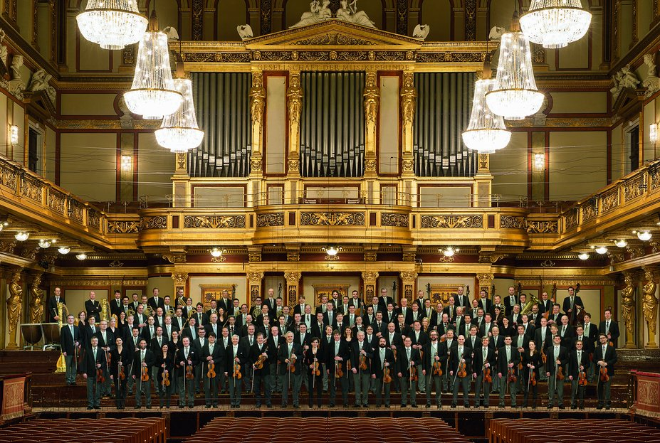

Concert in the Wiener Konzerthaus
19:30 | Vienna Konzerthaus, Large Hall, Vienna, Austria
The Wiener Konzerthaus is one of the largest and most artistically progressive institutions in international musical life. During the course of a season, which extends from September to June, some 750 wide-ranging events take place and more than 600,000 visitors can listen to around 2,500 different compositions. With this comprehensive and varied selection, the Wiener Konzerthaus – together with the Vienna State Opera House and the Musikverein – is central to Vienna’s reputation as one of the world’s leading music capitals.
From its earliest days, the Wiener Konzerthaus has held the highest cultural aims and artistic mission: »To act as a venue for the cultivation of fine music, as a meeting point for artistic endeavour, as a home for music and a cultural centre for Vienna«. It was in this spirit that the Konzerthaus was inaugurated on 19 October 1913 with a festive concert attended by Emperor Francis Joseph I. To mark the occasion, Richard Strauss wrote the »Festliches Präludium op. 61«, which was followed by Beethoven’s Ninth Symphony. This programme combination, comprising a contemporary work and a masterpiece from the past, served as a model for the Wiener Konzerthaus’s future direction: today, too, an awareness of tradition and the joys of innovation form the main pillars of the Konzerthaus’s artistic identity.
CONDUCTOR
Alain AltinogluORCHESTRA
Vienna PhilharmonicCELLO
Gautier CapuçonPROGRAM
Antonín DvořákKonzert für Violoncello in h-Moll, op. 104
César Franck
Symphonie in d-Moll